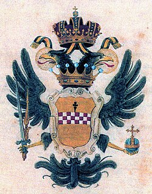
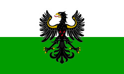

Granducato di Toscana
Granducato di Toscana
 Ducato di Parma
Seconda Repubblica Romana
Ducato di Parma
Seconda Repubblica Romana

Contea di Tassarolo
Principato Vescovile di Trento Contea di Gorizia